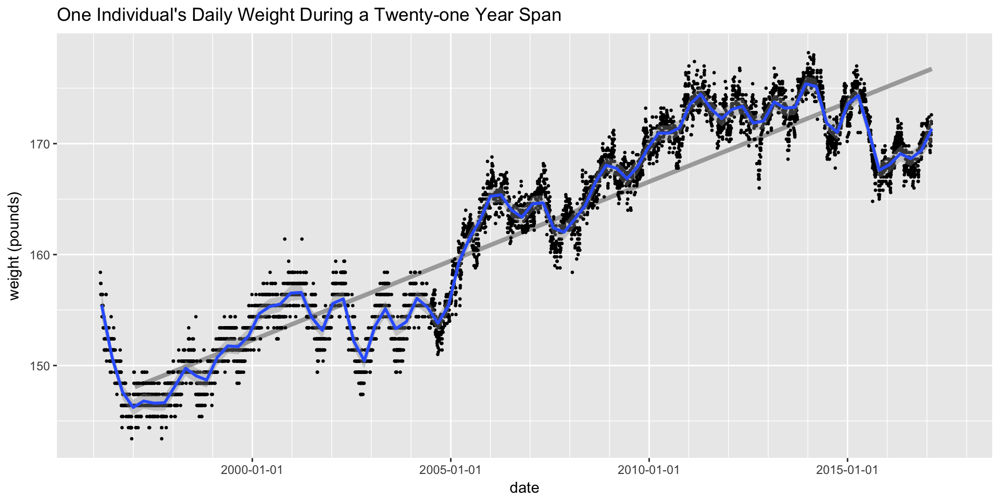

An Implementation of Narcissism in R
Feb 26, 2017 · CommentsThis post is more an example of narcissism, but implementation has a nice technical ring to it.
Narcissism hasn’t been a word in my every-day vocabulary, although it has been in the news with greater frequency lately. We have seen a lot of discussions recently about narcissistic personality disorder, but that is not what I am talking about here. At least I hope not, because I’m talking about me.
Here’s the definition that fits this post:
Narcissism noun
1. inordinate fascination with oneself; excessive self-love; vanity. Synonyms: self-centeredness, smugness, egocentrism.
So “inordinate fascination with oneself” may be a good characterization of the datasets presented here. I don’t think “excessive self-love” or “vanity” have much to do with it.
A Twenty Year History of My Weight
For the last twenty-one years I have been recording my weight almost every single morning. I try to follow a consistent protocol. I’m in my pajamas before I go downstairs for tea and breakfast. It’s a more stable and reliable measure of weight than what is recorded in my doctor’s office. I have owned three scales during the twenty-one year period. The first one was analog and I wrote down my weight to the nearest pound. When I got a dgital scale in 2004, I used both scales for a period of time and adjusted the measurements from the analog scale according to the average difference from the digital scale. In short, I was serious about trying to establish a reliable measurement over time.
Is it weird or creepy to publish this data series on the internet? I’ll say some more about that at the bottom of the post. For now, bring on the data.
The R code used to plot this weight history isn’t terribly interesting, but I’ll show my work anyway. First I am showing the weight by day.
suppressPackageStartupMessages(
library(tidyverse))
## Conflicts with tidy packages ----------------------------------------------
# tidyverse loads these packages:
# Loading tidyverse: ggplot2
# Loading tidyverse: tibble
# Loading tidyverse: tidyr
# Loading tidyverse: readr
# Loading tidyverse: purrr
# Loading tidyverse: dplyr
suppressPackageStartupMessages(library(stringr)) # for processing strings
suppressPackageStartupMessages(library(lubridate)) # for datesif (str_detect(getwd(), "johng")) {
fp <- file.path("/Users", "johng", "Dropbox", "Programming","R_Stuff", "John Vitals","john weight.csv")
} else {
fp <- file.path("/Users", "john_imac", "Dropbox", "Programming","R_Stuff", "John Vitals","john weight.csv")}
weight_data<-read_csv(fp, col_types = cols(
date = col_date("%m/%d/%Y")))
weight_data$month <- month(weight_data$date, label = TRUE)
weight_data$weight <- ifelse(is.na(weight_data$adjusted), weight_data$raw, weight_data$adjusted)
# in 2004 I started entering data without decimals to save time, so 1746 is 174.6
# Next line converts the numbers that are so large they must be four digits without decimal:
weight_data$weight <- ifelse(weight_data$weight > 250, weight_data$weight / 10, weight_data$weight)
weight_data$year <- factor(year(weight_data$date)) # I'll use this for the second chart
# get average weight by month
weight_data$mid_month <- floor_date(weight_data$date, unit = "month") + days(14)
wtm <- group_by(weight_data, mid_month, month) %>% summarise(weight = mean(weight, na.rm = TRUE))
wtm2 <- filter(wtm, year(mid_month) > 1996) # weight by month, but without partial 1996
byday <- ggplot(data = weight_data, aes(x = date, y = weight)) + scale_x_date(date_breaks = "5 years", date_minor_breaks = "1 year")
# put the gray regression line first so that it is underneath the points and the other loess smoothed line.
byday <- byday + geom_smooth(method = "lm", se = FALSE, data = wtm2, aes(x = mid_month), colour = "darkgray", size = 1.5)
byday <- byday + geom_point(size = 0.5) + geom_smooth(data = wtm, aes(x = mid_month), span = 0.07)
byday <- byday + ggtitle("One Individual's Daily Weight During a Twenty-one Year Span") + ylab("weight (pounds)")
Weight Gain by Year
For a somewhat glib discussion of weight gain by year, see Wonkblog Look at how much weight you are going to gain. The article says the expected gain is between 0.5 and 1.5 pounds per year. The straight dark gray line on my weight chart is the regressioin line through the monthly data, but without the bit at the left end in 1996. The slope is about 1.4 pounds per year.
National Statistics on Weight by Age
What do we know about weight by age in the general population? One source is the National Health and Nutrition Examination Survey or NHANES. (There is a summary report for Anthropometric Reference Data that includes weight.) That is the source for the Wonkblog referred to above. It also seems to be the source for these charts (for white women and men) which were compiled at Dr. Halls website, which does not exactly reek of credibility.


For white mails, it shows weight peeking between 50 and 55 and then beginning to decline with age. Maybe. I was born in 1950 so I turned 55 in 2005. My personal peek seems to have been in the vicinity of 62. Maybe my slightly lower weight during the last two years is just another side effect of growing older. But it’s a bit problematic to use cross-sectional data like this as a longitudinal norm. We hear a lot about “the obesity epidemic” so maybe the 55-year old people in this chart will keep going up or stay the same as they get older. Maybe the peek is near 55 as a result of the “obesity epidemic” moving through the age distribution. I don’t know. The turndown after the peak may be only indirectly related to age. Almost any illness or medical problem is increases with age. Maybe age leads to illness and illness leads to weight loss. In my case, illness is not a factor.
The CDC NHANES survey seems to be done annually so it would be possible to look at the change in the distribution over time. They have data sets for the National Health and Nutrition Examination Survey year by year from 1999 to 2013.
I confess I’m not sufficiently interested in the issue of weight and age to dig in and try to get all that sorted out. Maybe I’ll come back to this. Were I to get interested, there is quite a bit of raw data available from NHANES for download as XPT files, which I see is the SAS data transport format. As usual, Hadley is one step ahead of me and the latest version of haven 1.0.0.9 (which is not yet up on CRAN) adds read_xpt as a command to read XPT SAS transport datasets. Maybe I’ll try that at some point, but in the meantime I want to press ahead with my more self-centered (or should I say narcissistic) exploraton of my personal body statistics.
Seasonal Variation in Weight
In the chart above showing my daily weight, I adjusted the “span” arguement to geom_smooth so that the smoothed curve shows seasonal patterns fairly clearly. (If the span parameter was smaller, I would get more bounding around within years. If it were larger, the curve would emphasize multi-year trends.)
First I will redo the chart in a way that emphasizes the pattern within years.
wtm$year <- year(wtm$mid_month)
weight_data$year <- year(weight_data$mid_month)
weight_data$month_with_fraction <- month(weight_data$mid_month) + ((day(weight_data$date) - day(weight_data$mid_month)) / 31)
pmonth <- ggplot(data = wtm, aes(x = month(mid_month), y = weight))
pmonth <- pmonth + geom_point(data = subset(weight_data, !is.na(weight)), size = 0.05, aes(x = month_with_fraction)) + facet_wrap(~year, nrow = 1) + geom_smooth(na.rm = TRUE, se = FALSE) +
scale_x_continuous(breaks = seq(1, 12, 4), minor_breaks = seq(1, 12, 1)) +
ggtitle("Weight by Year") + ylab("Weight") + xlab("Month")
plot(pmonth)
## `geom_smooth()` using method = 'loess'
## Warning in simpleLoess(y, x, w, span, degree = degree, parametric =
## parametric, : span too small. fewer data values than degrees of freedom.
## Warning in simpleLoess(y, x, w, span, degree = degree, parametric =
## parametric, : at 0.995
## Warning in simpleLoess(y, x, w, span, degree = degree, parametric =
## parametric, : radius 2.5e-05
## Warning in simpleLoess(y, x, w, span, degree = degree, parametric =
## parametric, : all data on boundary of neighborhood. make span bigger
## Warning in simpleLoess(y, x, w, span, degree = degree, parametric =
## parametric, : pseudoinverse used at 0.995
## Warning in simpleLoess(y, x, w, span, degree = degree, parametric =
## parametric, : neighborhood radius 0.005
## Warning in simpleLoess(y, x, w, span, degree = degree, parametric =
## parametric, : reciprocal condition number 1
## Warning in simpleLoess(y, x, w, span, degree = degree, parametric =
## parametric, : at 2.005
## Warning in simpleLoess(y, x, w, span, degree = degree, parametric =
## parametric, : radius 2.5e-05
## Warning in simpleLoess(y, x, w, span, degree = degree, parametric =
## parametric, : all data on boundary of neighborhood. make span bigger
## Warning in simpleLoess(y, x, w, span, degree = degree, parametric =
## parametric, : There are other near singularities as well. 2.5e-05
## Warning in simpleLoess(y, x, w, span, degree = degree, parametric =
## parametric, : zero-width neighborhood. make span bigger
## Warning in simpleLoess(y, x, w, span, degree = degree, parametric =
## parametric, : zero-width neighborhood. make span bigger
## Warning: Computation failed in `stat_smooth()`:
## NA/NaN/Inf in foreign function call (arg 5)You can see that for most years there is an N shaped pattern. In January weight is still headed up and reaches its peak later in the winter. The trough happens at the end of the summer. It starts back up and continues higher through the end of the year. Basically it is high in early spring and low in early fall. It shows up as an N in this chart because the annual boundary between January and December interrupts the pattern.
I would guess that seasonal adjustment would be a big topic in econometrics. I don’t know much about. But of course there is an R package called seasonal.